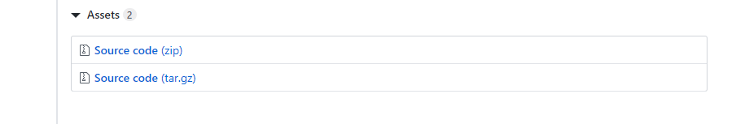
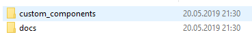

Installation¶
This integration requires a lot of files.
The easiest way to make sure that you have them all is to download the .zip file from the repository.
Prerequisittes¶
- You need to use Home Assistant version 0.92.0 or newer for this to work.
- If you move from
custom_updaterto this see the special note at the bottom here.
Installation steps¶
If you want to download using a terminal (and git) look here
Step 1 - Open browser¶
You are probably looking at this in a browser, so we can probably check this off.
Step 2 - Go to the HACS repository¶
Then find the latest release from the release page.
Shortcut: https://github.com/custom-components/hacs/releases/latest
Step 3 - Initialize Download¶
Initialize the download by clicking on the "Source code (zip)" link at the bottom of the page.

Step 4 - Extract the content¶
There should now be a hacs-VERSION_NUMBER.zip (like hacs-0.9.0.zip) file in your Download folder.
You need to unzip this, before proceeding.
Step 5 - Move along¶
Now that you have extracted all the files you will see something like this:

In the custom_components named, there is a folder named hacs.
The folder named hacs would need to be copied to your Home Assistant installation.
For this use your favorite tool to get stuff to Home Assistant.
If this is your first custom_component you would need to create a new folder (see step 6).
If this is not your first, you should know where to place the hacs folder, and if this is not your first why are you reading this? you have done this earlier and should know this by now :D
Anyway the hacs folder needs to be placed under <config_dir>/custom_components/
On Hassio the final location will be /config/custom_components/hacs
On Hassbian the final location will be /home/homeassistant/.homeassistant/custom_components/hacs
Step 6 - (Bonus)¶
If you are a seasoned user, skip to step 7.
Cool you are still reading.
Open the folder where you have your configuration.yaml file.
Don't open that file (yet) just the folder for now.
If you see a folder named custom_components there, go back to Step 5 if you think you need to do something here.
If you do not see a custom_components folder in the same folder as configuration.yaml, you need to create it.
The custom_components needs to be in the exact same folder as configuration.yaml
Step 7 - Restart Home Assistant¶
Restart Home Assistant once before moving on to step 8.
Step 8 - ✏️¶
You should now be done, next part will be to add it to your configuration.
Moving from custom_updater¶
If you have custom_updater installed you need to remove that (rename the directory or delete it completely). You will also need to remove the custom_updater entry from your configuration.yaml file.
HACS and custom_updater can not operate on the same installation.
If you used the special endpoint /customcards/ endpoint for your Lovelace cards, you now need to reinstall that plugin using HACS and use the url provided in the page for that plugin in the HACS UI, if the plugin is not there you need to use /local/ instead.
As noted under 'Existing elements' You need to click the "INSTALL" button for each element you previously have installed.